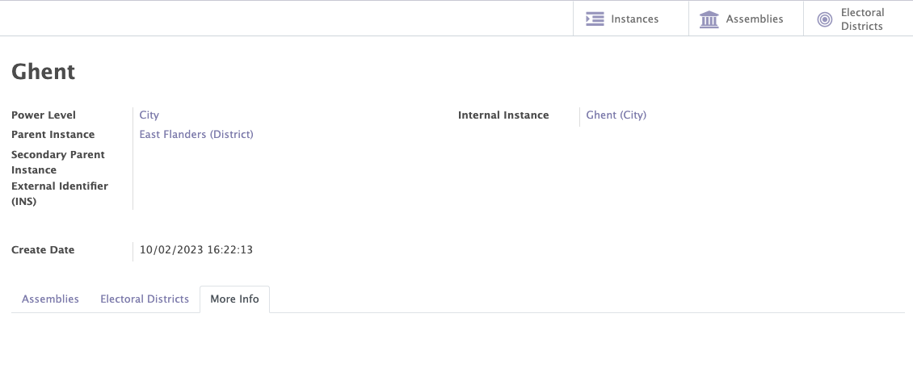
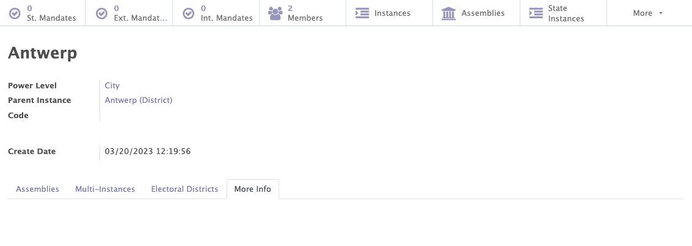
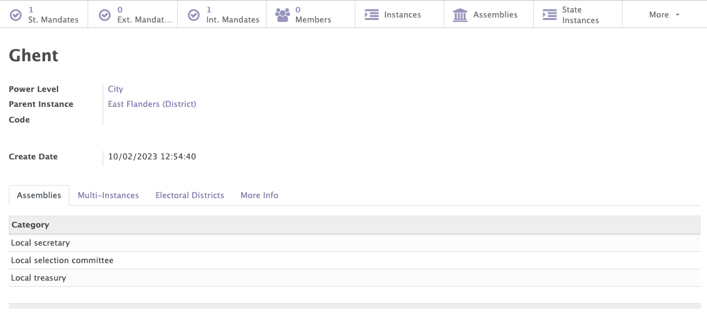
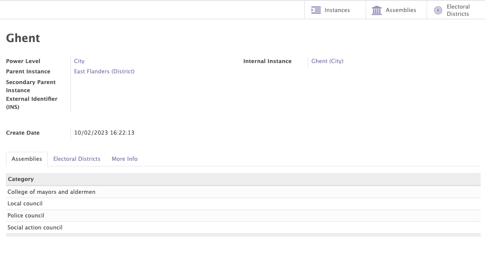
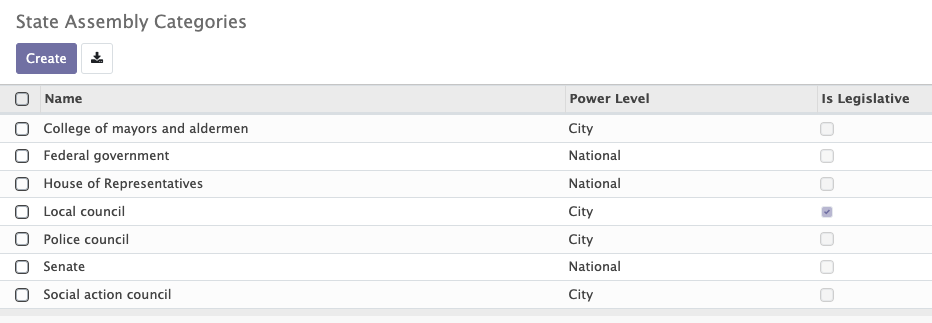
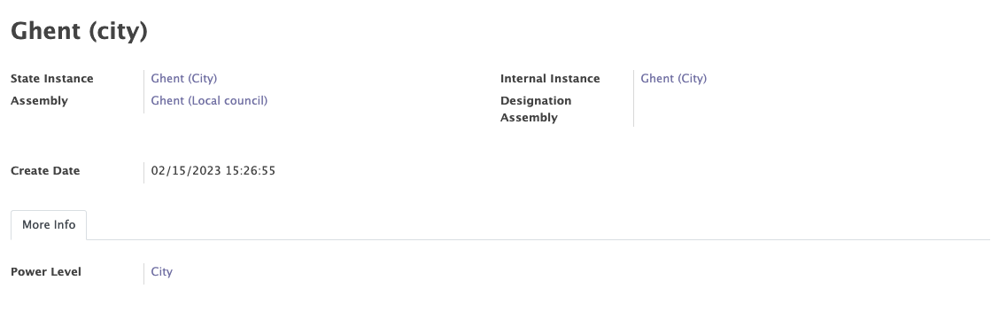
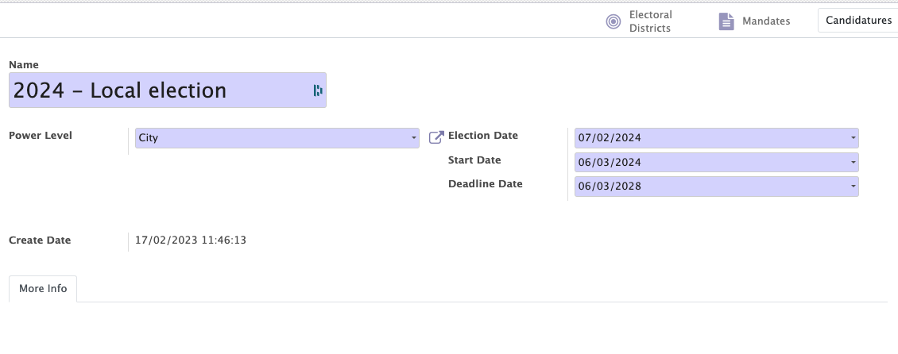

Structure
The structure module enables you to define how you organisation is organized by creating three types of structures:
- Internal structure of the organisation
- Political structure of the country (for political parties)
- External structure
Those structures are entirely configurable in Mozaik, they can easily be adapted to the needs of any organisation (parent levels, power levels & assemblies can easily be added etc...).
Those structures are used in most of the other modules of Mozaïk (contacts, mandates, access rules...).
In the structure module, you will encounter the following terms:
- Power levels
- Instances
- Assemblies
- Electoral districts (political structure only)
- Legislatures (political structure only)
Power levels
A power level refers to the different decision-making bodies within an organisation/country. Each level of authority is responsible for managing specific functions or activities.
Examples
In the internal structure of a political party, the power level is represented by the distribution of competences in the political party:
- The cities
- The district in each city
- A group of cities
- National level
In the political structure of Belgium, the power level is represented by the distribution of competences between the federated entities:
- The cities
- The regions
- The communities
- The provinces
- The federal State
Instances
An instance is a governance entity responsible for the management of specific functions or activities. It may be composed of elected or appointed members, and is responsible for making important decisions for the organisation.
Instances are always linked to a name and to a power level. They can also be linked to a parent instance, in order to create a hierarchical structure.
For example:
The Province of East Flanders in Belgium is the parent instance of the city of Ghent.
In the internal structure of the party, the internal instance of Antwerp may be linked to a parent level 'District of Antwerp'.


Assemblies
Each instance can be associated to an assembly category of the same power level. This combination is generating assemblies, which are collective decision-making instances.
Examples
In the internal structure of the political party, the city of Ghent (power level = city) could be associated with the following categories of assemblies:
- Local secretary
- Local treasury
The city of Ghent in the internal structure is therefore associated with a local secretary and a local treasury
In the political structure of Belgium, the city of Ghent (power level = city) could be associated with the following categories of assemblies:
- The college of mayors and aldermen
- The local council
- The police council
- The social action council
The city of Ghent in the political structure is associated with a college of mayors and aldermen, a local council, a police council and a social action council.



Electoral districts (only for the political structure)
An electoral district is a division of the territory made for the purpose of an election. Each citizen is attached to one (and only one) electoral district.
The electoral districts can be registered in the "electoral districts" tab of the state structure.

Legislature (only for the political structure)
A legislature is a period of time during which the members of a legislative body, such as a national assembly or parliament, exercise their functions.
This feature allows you to add/modify/delete the different legislatures of your political structure.
All political mandates created in Mozaik are always linked to a specific legislature.
